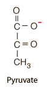

Pyruvate
|  |
Pyruvate is a crucially important compound in biochemistry because it is the end product of gylcolysis. Glycolysis is the first step in all cellular respiration and pyruvate stands at the junction between anaerobic and aerobic pathways. Pyruvate is the anion of pyruvic acid. |
In anaerobic respiration, pyruvate is used as the starting point for fermentation, yielding either ethanol or lactate. For aerobic respiration, pyruvate is transported to the mitochondria to be used in the TCA cycle.
|
Index
Organic chemistry concepts
Chemistry concepts |